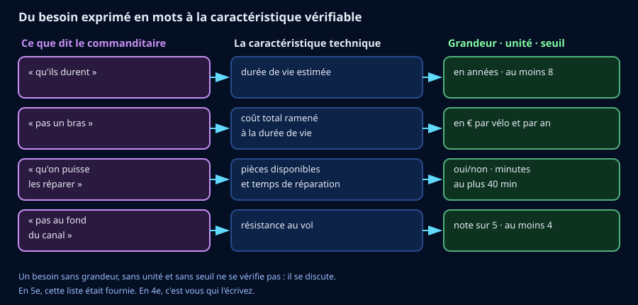

🎫 Billet d'entrée — je vérifie mes outils de 5e (5 min, sans note)
Trois questions sur ce que tu as travaillé l'an dernier. Aucune note : c'est un aiguillage. La capsule en dessous te remet en selle en trois minutes si besoin.
🎒 Je révise en 3 minutes
Un cahier des charges transforme un besoin en exigences vérifiables : une grandeur, une unité, un seuil. Tant qu'il n'est pas écrit, « la meilleure solution » ne veut rien dire.
Sur un objet qui dure, c'est l'utilisation qui pèse le plus : un petit écart quotidien multiplié par des années dépasse un coût unique, même élevé.
Une exigence est remplie ou non : elle ne se moyenne pas avec les autres.
✍️ Activité 1 — Du besoin flou aux caractéristiques mesurables (~40 min)
D'abord la méthode : de la bête à cornes aux caractéristiques
Le maire a dit son besoin en une phrase ; pour choisir, il faut en tirer des caractéristiques que l'on peut comparer d'un modèle à l'autre. Entraîne-toi d'abord sur un autre objet, le système d'arrosage connecté d'un jardin partagé, dont le besoin est écrit dans une bête à cornes : chaque partie du besoin demande une caractéristique, et ce qui ne sert pas le besoin ne compte pas. Un exercice, environ dix minutes ; il se vérifie tout seul et a sa correction complète.
📘 Le cours — ce qu'il faut savoir
Rappel : la bête à cornes
- Trois questions : à qui le produit rend-il service ? sur quoi agit-il ? dans quel but ?
- Le but, écrit avec un verbe à l'infinitif et sans solution, est la fonction d'usage de l'objet.
Quand le besoin évolue, l'objet évolue
- Un besoin évolue avec la façon de vivre (les vacances, le travail loin de chez soi), avec une invention ou une innovation qui rend possible ce qui ne l'était pas, et avec le développement durable (économiser l'eau, l'énergie).
- Pour justifier l'évolution d'un objet, on compare les bêtes à cornes d'avant et d'après, partie par partie. Souvent, c'est le but qui s'enrichit : « arroser les plantes » devient « arroser les plantes, même en l'absence de la gardienne, sans gaspiller l'eau ».
- Une panne ou la mode ne justifient pas une évolution : un objet cassé se remplace par le même.
Du besoin aux caractéristiques
- Une caractéristique décrit un modèle et se compare d'un modèle à l'autre : une capacité, une consommation, une durée, une résistance.
- Chaque partie du besoin appelle une caractéristique à comparer :
| Partie du besoin | Caractéristique à comparer | Unité |
|---|---|---|
| « même en l'absence de la gardienne » | l'autonomie | jours |
| « sans gaspiller l'eau » | la consommation d'eau | litres par jour |
| « à qui ? » la gardienne, qui règle le système | la facilité de réglage | minutes pour régler |
- Le programme cite aussi des critères de choix valables pour presque tous les objets : la qualité, l'efficacité énergétique, la durabilité, la recyclabilité.
- On écarte ce qui ne sert pas le besoin (la couleur, la marque, un bouton décoratif) : si on le change, l'objet répond tout aussi bien.
Le cours complet, avec les schémas et les mots : la synthèse.
Exercice 1 — Du besoin aux caractéristiques
📖 Les mots de cet exercice
- caractéristique
- ce qui décrit un modèle et que l'on peut comparer d'un modèle à l'autre : une capacité, une consommation, une durée, une résistance…
- autonomie
- le temps pendant lequel un système fonctionne seul, sans que personne n'intervienne.
- capacité
- la quantité qu'un récipient peut contenir, en litres pour une cuve.
- consommation
- ce que le système utilise pour fonctionner : de l'eau, en litres par jour, ou de l'énergie électrique.
- prendre en compte
- regarder, et faire peser dans le choix.
📝 Ce que montre le schéma, en mots
- À qui ? La gardienne du jardin.
- Sur quoi ? Les plantes du jardin.
- Au centre : le système d'arrosage connecté.
- Dans quel but ? Arroser les plantes du jardin, même en l'absence de la gardienne, sans gaspiller l'eau.
Le collège doit choisir un système d'arrosage parmi plusieurs modèles vendus dans le commerce. Pour comparer les modèles, il faut d'abord savoir quoi regarder. La bête à cornes le dit : chaque partie du besoin demande une caractéristique.
Une caractéristique, c'est ce qui décrit un modèle et qu'on peut comparer d'un modèle à l'autre (une capacité, une consommation, une durée…). Coche les caractéristiques à prendre en compte pour choisir un système qui réponde à ce besoin, et laisse celles qui ne le servent pas. Puis relie trois d'entre elles à la partie du besoin qu'elles servent.
✅ Tu as réussi si… les huit cases justes, et chaque caractéristique reliée à la bonne partie du besoin.
💡 Aide 1 — pour démarrer
Pour chaque caractéristique, demande-toi : si elle changeait, est-ce que le système répondrait mieux ou moins bien au besoin ? Si la réponse est « ça ne change rien », écarte-la.
💡 Aide 2 — le raisonnement pas à pas
« Même en l'absence de la gardienne » → combien de jours seul ? → l'autonomie ; assez d'eau pour ces jours ? → la capacité de la cuve ; pas de panne dehors → la résistance à la pluie et au soleil.
« Sans gaspiller l'eau » → la consommation d'eau par jour.
« À qui ? » la gardienne → elle règle le système → la facilité de réglage.
La couleur, la marque, les boutons décoratifs → si on les change, l'arrosage reste le même → écartés.
🪜 Version étayée : des débuts de phrase pour t'aider
- Dans cette nouvelle situation, je pose la même question que dans l'aide 2 : …
- Ma réponse : … parce que …
🔍 Correction de l'exercice jumeau
À prendre en compte : la capacité (assez pour toute la famille), le nombre d'heures au frais (toute la journée), le poids (on la porte jusqu'au sable). À écarter : la couleur et le logo — ils peuvent plaire, mais ils ne servent pas le besoin.🔍 La correction complète, et pourquoi
📌 À retenir : pour choisir un objet, on part du besoin : chaque partie de la bête à cornes indique une caractéristique à comparer (autonomie, consommation, capacité, résistance…).
⚠ Le piège classique : choisir sur ce qui se voit (la couleur, la marque) au lieu de ce qui sert le besoin.
🐂 Ces exercices viennent de l'atelier de 4e « Le besoin » : ce que tu fais ici s'y retrouve, avec un exercice sur le besoin qui évolue, de l'arrosoir au système connecté, et le QCM de l'atelier.

a) Traduire chaque mot du maire
b) Un critère peut en cacher un autre
c) Ton cahier des charges
🪜 Version étayée — des phrases à compléter
Le niveau attendu est exactement le même : on retire l'obstacle de la rédaction, pas l'exigence. Chaque ligne doit être vérifiable : un nombre et une unité, ou un oui/non que l'on peut contrôler.
- « Exigence 1 : la durée de vie doit être d'au moins ____ ans. »
- « Exigence 2 : le coût total doit rester sous ____ € par vélo et par an. »
- « Exigence 3 : les pièces détachées doivent être ____, et le temps de réparation inférieur à ____ min. »
- « Exigence 4 : la note d'antivol doit être d'au moins ____ sur 5. »
💡 Aide de niveau 1
Pour chaque mot du maire, pose-toi trois questions dans l'ordre : quelle grandeur j'observe ? dans quelle unité ? à partir de quelle valeur est-ce satisfaisant ?
💡💡 Aide de niveau 2
« Pas un bras » est le plus difficile, parce qu'il cache un piège : le vélo le
moins cher à l'achat peut être le plus cher à l'usage. Regarde les colonnes
prix_achat_euros, cout_entretien_annuel_euros et
duree_vie_estimee_ans — et fabrique une grandeur qui les combine.
📖 Correction complète
Grandeur, unité, seuil. Une caractéristique n'est utilisable que si elle porte une grandeur, une unité et un seuil. « Solide » n'est pas une caractéristique : c'est une impression.
Le vrai coût. « Pas un bras » ne se traduit pas par le prix d'achat. Le coût qui compte est le coût total ramené à la durée de vie : un vélo à 890 € qui dure 6 ans revient plus cher qu'un vélo à 340 € qui en dure 12, avant même de compter l'entretien.
Deux caractéristiques en une. « Qu'on puisse les réparer » cache bien deux caractéristiques : on peut avoir les pièces sans pouvoir intervenir vite, et l'inverse.
Le confort, sous condition. Le confort peut être ajouté — à condition de le justifier : un vélo qu'on n'aime pas utiliser fait moins de kilomètres, donc amortit moins bien sa fabrication. C'est exactement le travail de la 4e : proposer un critère que personne n'a demandé, et défendre son utilité.
Indispensable, ou souhaitable. Enfin, quinze exigences donnent souvent zéro solution. On distingue l'indispensable (le filtre) du souhaitable (qui départage ensuite).
🧠 À retenir : une caractéristique se dit avec une grandeur, une unité et un seuil. Sans les trois, elle ne se vérifie pas — elle se discute.
⚠️ Piège classique : traduire « pas cher » par le prix d'achat. Le prix d'achat ne dit rien de ce que l'objet coûtera.
Critère de réussite : tes quatre exigences sont chacune vérifiables (un nombre et une unité, ou un oui/non contrôlable), et tu sais dire d'où vient chacune dans la phrase du maire.
🌍 Activité 2 — Comparer les incidences, pas seulement les prix (~35 min)
Ouvre le fichier dans un tableur. Quatre flottes, dix-sept colonnes.
a) Le classement naïf
b) Rapporter au service rendu
Calcule au tableur, pour chaque flotte : (CO₂ fabrication + CO₂ entretien × durée
de vie) ÷ (durée de vie × km par an), en grammes par kilomètre.
c) Qualitatif et quantitatif
🪜 Version étayée — des phrases à compléter
- « Sur le seul critère ____, la flotte ____ arrive en tête. »
- « Mais si on rapporte au service rendu, elle passe ____, parce que ____ (chiffre : ____). »
- « Un seul critère est donc trompeur, parce qu'il ____. »
💡 Aide de niveau 1
Un bilan carbone n'a de sens que rapporté à ce que l'objet rend comme service. Ici, le service est le kilomètre parcouru par un usager.
💡💡 Aide de niveau 2
Écris la formule une fois, puis recopie-la vers le bas. Attention aux unités : les CO₂ sont en kilogrammes, le résultat demandé en grammes — il faut multiplier par 1000.
F1 : (96 + 7×12) ÷ (12×2400) = 180 kg pour 28 800 km ≈ 6,3 g/km.
📖 Correction complète
Sur le seul CO₂ de fabrication, F4 gagne largement (58 contre 210 pour F3). Mais ce chiffre seul ne dit rien : il ignore combien de temps le vélo servira et combien de kilomètres il fera.
Rapporté au service rendu : F4 ≈ 5,6 g/km, F1 ≈ 6,3, F2 ≈ 8,3, F3 ≈ 13,1. L'ordre ne change pas ici — mais l'écart, lui, change complètement de nature : F3 n'est plus « 3,6 fois pire » que F4 sur le papier, elle l'est « 2,3 fois » dans les faits. Et surtout, F1 se rapproche beaucoup de F4, alors qu'elle émet 1,7 fois plus à la fabrication.
F3 termine dernière malgré ses 3600 km par an parce qu'elle cumule beaucoup d'émissions et une vie courte : son coût de fabrication est amorti sur trop peu de kilomètres.
Enfin, « cadre non réparable » ne se chiffre pas — et écarte pourtant la solution à elle seule. Une donnée qualitative peut être décisive. Comparer, ce n'est pas seulement calculer.
🧠 À retenir : une incidence environnementale se rapporte toujours au service rendu. Et une donnée qualitative peut peser plus lourd qu'un chiffre.
⚠️ Piège classique : classer sur un seul critère, puis annoncer le résultat comme si c'était le classement général.
📐 Activité 3 — À chaque grandeur son appareil (~30 min)
![Tableau à quatre colonnes : la grandeur à mesurer, son unité, l'appareil qui convient et la précision courante. Masse en kilogrammes avec une balance au dixième de kilogramme ; encombrement en mètres au mètre ruban au millimètre ; temps de réparation en minutes au chronomètre à la seconde ; effort de rupture d'un antivol en newtons au dynamomètre au newton ; tension en volts au multimètre au centième de volt ; distance parcourue en kilomètres au compteur au kilomètre. Un encadré rappelle qu'un appareil ne mesure qu'une seule grandeur et qu'une mesure s'écrit toujours avec son unité.](Images/appareils_de_mesure.svg)
a) Associer la grandeur et l'appareil
b) La précision, et ce qu'elle change
c) Ton protocole
🪜 Version étayée — des phrases à compléter
- « J'ai choisi de vérifier l'exigence ____. »
- « Étape 1 : je prépare ____ dans les mêmes conditions pour toutes les flottes. »
- « Étape 2 : je mesure ____ avec ____, en ____ (unité). »
- « Étape 3 : je répète ____ fois et je garde ____. »
- « Étape 4 : je compare au seuil de ____ et je conclus. »
💡 Aide de niveau 1
Avant de choisir un appareil, demande-toi toujours quelle grandeur tu veux mesurer : une masse, une longueur, une durée, une force, une tension. L'appareil vient après, jamais avant.
💡💡 Aide de niveau 2
« Solide » n'est pas une grandeur. Pour le mesurer, il faut d'abord décider ce qu'on appelle solidité : la force qui fait céder le cadre ? le nombre de chocs supportés ? le temps avant la première fissure ? Chaque décision appelle un appareil différent — et c'est justement le travail demandé en 4e.
📖 Correction complète
Chronomètre pour une durée, dynamomètre pour une force, balance pour une masse : un appareil ne mesure qu'une seule grandeur. Se tromper d'appareil, c'est souvent s'être trompé de grandeur avant.
« Mesurer la solidité » n'a pas de sens tant qu'on n'a pas dit ce qu'on appelle solidité. C'est le cœur du 4e_C3.3 : transformer une qualité en grandeur mesurable, puis seulement choisir l'instrument.
Sur la précision : un appareil au dixième de kilogramme départage 17,4 et 18,9 kg sans difficulté, mais il ne peut rien dire de 13,1 contre 13,15. Refaire trois essais n'y change rien : le problème n'est pas le hasard, c'est la résolution de l'appareil. Il faut un instrument plus fin, ou accepter que les deux soient équivalentes sur ce critère.
🧠 À retenir : on choisit la grandeur avant l'appareil. Et un écart plus petit que la précision de l'appareil n'est pas un écart : c'est du bruit.
⚠️ Piège classique : annoncer un résultat plus précis que l'appareil ne le permet.
Critère de réussite : ton protocole nomme la grandeur, l'unité, l'appareil, le nombre d'essais, et compare explicitement au seuil.
🧭 Activité 4 — Filtrer, puis départager (~25 min)
On retient les quatre exigences suivantes, proches de ce que la classe a écrit : durée de vie ≥ 8 ans · pièces détachées disponibles · temps de réparation ≤ 40 min · note d'antivol ≥ 4 sur 5.
💡 Aide de niveau 1
Traite les exigences une par une et note qui tombe à chaque fois. Une flotte est écartée dès qu'elle en rate une seule.
💡💡 Aide de niveau 2
F1 : 12 ans · pièces oui · 35 min · antivol 4 → passe. F2 : 8 ans · oui · 25 min · antivol 3 → tombe. F3 : 6 ans · non · 70 min · antivol 3 → tombe trois fois. F4 : 10 ans · oui · 30 min · antivol 5 → passe.
📖 Correction complète
F1 et F4 passent les quatre exigences. F2 tombe sur l'antivol (3 pour un seuil de 4) malgré d'excellents résultats ailleurs ; F3 tombe sur trois exigences.
Le filtre ne suffit pas à décider : il reste deux flottes. C'est là qu'interviennent les critères souhaitables — et là qu'il faut assumer un choix. F4 émet moins et coûte moins cher ; F1 est plus confortable et fait 300 km de plus par vélo et par an, ce qui n'est pas rien pour un service public.
Il n'y a pas de bonne réponse unique. Il y a une réponse argumentée, qui dit ce qu'elle privilégie. C'est ce qu'on attend d'un élève de 4e.
🧠 À retenir : le filtre écarte, il ne choisit pas. Départager demande de dire ce qu'on privilégie.
✉️ Activité 5 — La note au service technique (~20 min)
🪜 Version étayée — des phrases à compléter
- « Je recommande la flotte ____. »
- « D'abord parce que ____ (chiffre : ____). »
- « Ensuite parce que ____ (chiffre : ____). »
- « Sa limite est ____ : elle ne conviendrait pas si ____. »
- « À Fort-de-France, il faudrait ajouter l'exigence ____, à cause de ____. »
📖 Correction complète
Les deux réponses se défendent, à condition d'être argumentées avec des chiffres du tableau.
La limite doit être réelle : F4 est lourde (18,9 kg) et peu confortable (2 sur 5), ce qui peut réduire son usage ; F1 émet 1,7 fois plus à la fabrication et contient peu de matière recyclée (22 %).
Pour Fort-de-France : l'air salin impose une exigence de tenue à la corrosion que Hangzhou n'exigeait pas, et le relief change complètement le rapport au poids — 18,9 kg dans les montées de Didier n'a rien à voir avec 18,9 kg sur les berges plates du lac de l'Ouest. Transposer, c'est refaire l'analyse, pas copier la solution.
🧠 À retenir : une note technique dit ce qu'elle recommande, sur quels chiffres, et ce qu'elle coûte. Sans la limite, elle n'est pas crédible.
🎁 Bonus (facultatif — hors parcours obligatoire)
Trois défis ouverts, sans vérificateur.
1. La ville ajoute une exigence : « au moins 50 % de matière recyclée ». Qui reste en lice ? Et qu'est-ce que cela dit du poids d'une exigence isolée ?
2. Invente la cinquième flotte qui satisferait les quatre exigences et battrait F4 sur le CO₂ par kilomètre. Ses dix-sept colonnes doivent rester cohérentes entre elles — c'est plus difficile qu'il n'y paraît.
3. Écris le protocole complet qui permettrait de vérifier la note d'antivol sur 5. Quelle grandeur ? Quel appareil ? Et surtout : comment passer d'une force en newtons à une note sur 5 sans tricher ?
🪜 Version étayée — des phrases à compléter
- « J'ai choisi le défi n°____. »
- « L'exigence ou la grandeur que je regarde : ____. »
- « Ce qui reste en lice : ____, parce que ____. »
- « La limite de ma réponse : ____. »
🪞 Mon bilan personnel
💭 Rappel de ton hypothèse de départ :
🪜 Version étayée — des phrases à compléter
- « Au départ je pensais que ____. »
- « Maintenant je sais que ____, parce que ____. »
- « Ce qui a changé mon avis, c'est ____. »
🪜 Version étayée — des phrases à compléter
- « J'ai appris qu'une caractéristique se dit avec ____, ____ et ____. »
- « J'ai appris qu'une incidence se rapporte à ____. »
- « J'ai appris qu'on choisit ____ avant l'appareil. »
🪜 Version étayée — des phrases à compléter
- « Je sais maintenant écrire une exigence avec ____. »
- « Je sais maintenant rapporter une émission à ____. »
- « Je sais maintenant choisir l'appareil qui correspond à ____. »
🪜 Version étayée — des phrases à compléter
- « Je dois encore revoir ____, parce que ____. »
- « Ce que je n'arrive pas encore à faire seul·e : ____. »
- « Pour progresser, la prochaine fois je ____. »
Je me positionne
🧠 Prêt·e à t'entraîner ?
Le QCM de la séquence t'attend : 30 questions dont 2 illustrées, sur les caractéristiques, les incidences et les appareils de mesure.
Chaque réponse fausse y est expliquée — c'est là qu'est le travail.